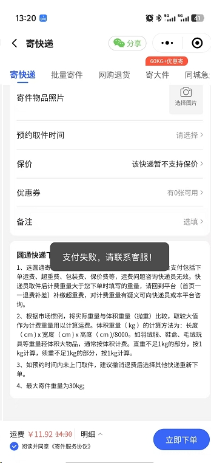
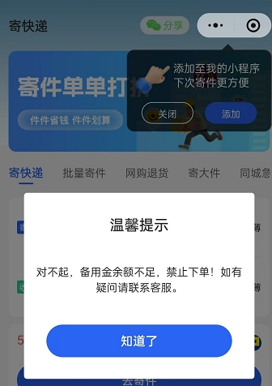

登录正常但业务不可用怎么办？
分别核对账号状态、实名、版本、业务授权、白名单和页面发布状态。登录成功只说明账号可进入，不代表具备全部业务权限。
按账号实名、小程序、订单数据、提现结算、链接密令、快递、电影票和霸王餐快速查找处理路径。
确认账号主体、用户版本、登录入口、验证码状态和权限范围；不得索取账号密码。涉及系统权限时提交脱敏用户标识和操作路径。
核对实名信息、收款账户、余额、待结算账单和系统旧数据是否同步清理；按实名与收款主体 SOP 升级技术和财务。
记录小程序、版本、操作时间、错误提示和是否可复现；先确认平台状态，再区分配置、权限、模板或系统问题。
历史复盘显示运营修改模板与用户同时发布可能产生并发不同步。暂停重复操作，统计影响用户，完成覆盖率校验后再恢复发布。
“收货/完成”和“结算/入账”不是同一状态。核对业务账期、上游确认、退款核销和技术服务费后再解释。
核对密令是否生效、是否正确绑定推广位、是否属于当期批次、该活动是否支持密令以及归因期是否被覆盖。
先区分父订单定档和子订单均分，核对大盘总激励和参与均分的子订单数。
核对实名、收款账户、余额、申请状态、税务/发票要求和系统错误；不要直接改走线下付款。
必须审批、确认金额、留存凭证并处理线上申请，关闭前排除重复支付。
核对退款、核销、风控、支付门槛、归因、技术服务费及最终账单。
先确认单链接或批量、网络/平台拦截、原业务是否下线，再按链接失效 SOP 切换新链或兜底域名。
核对推广位、参数、活动批次、业务开佣和归因覆盖；不要只凭“能打开”判断有效。
平台无法直接发放时，使用受控台账按渠道标识分配并登记，不得重复分配。
先确认有票票、淘票票或聚推客；按渠道、影城退改协议和供应商结果处理，强时效问题立即升级。
核对寄件渠道、首续重、补差、物流状态、发票和实际损失；涉及赔付时保留证据并审批。
核对报名、资格、订单、核销、返现和提现节点；批量异常按 P0/P1 升级，单用户按完整链路排查。
告知已受理、当前核验内容和下一次更新时间，不承诺未确认的恢复时间或赔付金额。
分别核对账号状态、实名、版本、业务授权、白名单和页面发布状态。登录成功只说明账号可进入，不代表具备全部业务权限。
检查模板版本、发布时间、审核状态、缓存和并发修改。若运营修改模板时用户同时发布，可能造成覆盖不完整，应暂停发布、重新覆盖并校验覆盖率。
先说明已受理并核验业务状态、链接批次和影响范围；确认失效后提供新链和验证步骤。未确认前不承诺恢复时间。
区分用户侧支付、平台余额、渠道备付金和系统错误。批量出现时立即升级，避免用户反复提交；恢复后用测试单验证并关注是否产生重复订单。
按渠道规则立即升级，记录场次和剩余时间；不得承诺一定退票。有票票走微信群客服，淘票票看影城协议，聚推客尝试供应商并说明可能手续费。


{kind=link}
{kind=link}